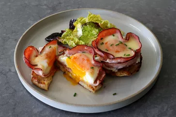

إفطار وبرنش
استمتع بأشهى الأطباق من جميع أنحاء العالم بكل سهولة


إفطار وبرنش

الفطور والغداء الخفيف

وصفات التوست الفرنسي

وصفات البطاطس المبشورة
وصفات البان كيك

مشروبات
14 وصفة أومليت لبداية صباح نشيط
17 وصفة إفطار مستوحاة من المطبخ المكسيكي
9 وصفات بان كيك بالزبادي هشة
15 فطور مالح بدون بيض